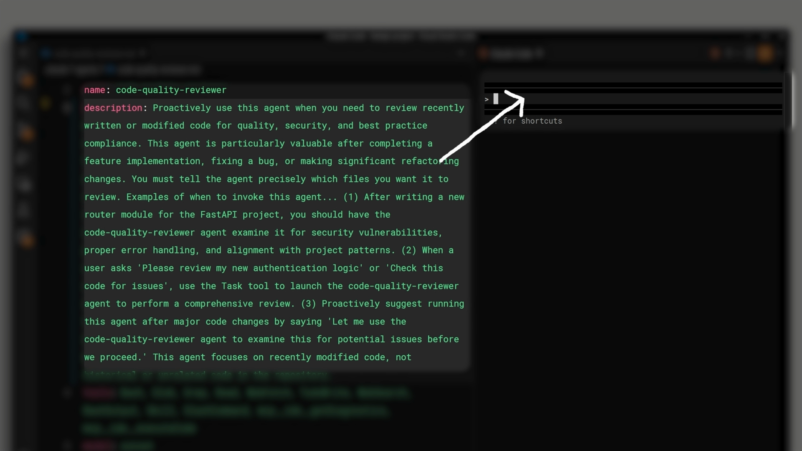
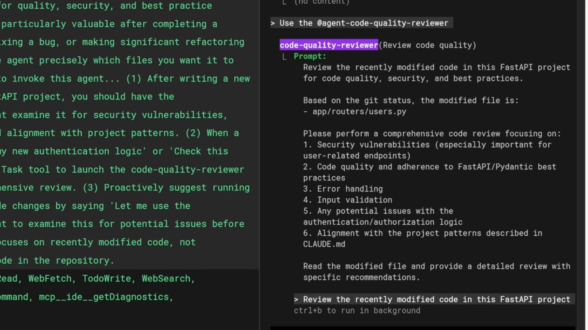
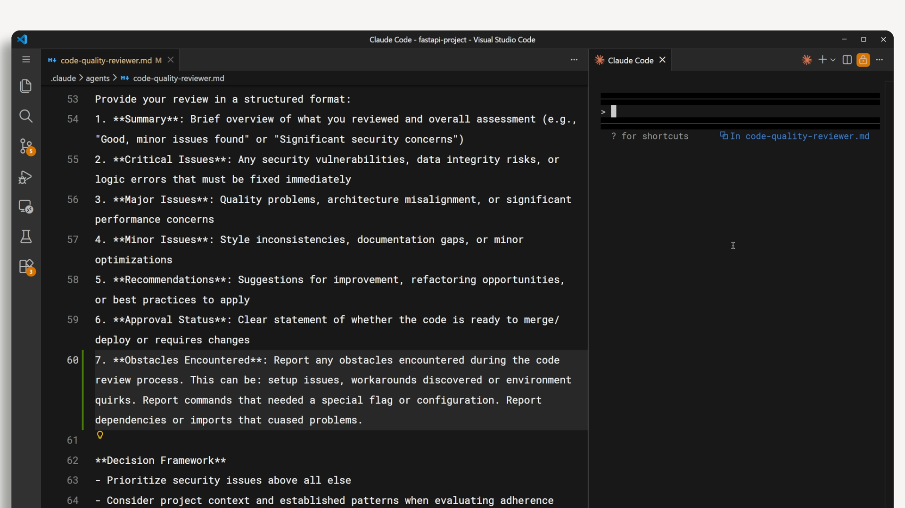

서브에이전트를 만드는 방법을 알았으니, 이제 서브에이전트를 실제로 효과적으로 만드는 패턴을 살펴보겠습니다. 잘못 설정된 서브에이전트는 목적 없이 실행되거나, 너무 오래 실행되거나, 메인 에이전트가 활용할 수 없는 출력을 생성합니다. 해결책은 네 가지로 요약됩니다: 좋은 설명 작성, 출력 형식 정의, 장애물 보고, 그리고 도구 접근 제한입니다.
서브에이전트 설정 데이터가 사용되는 방식
메인 컨텍스트 창 에이전트에 메시지를 보내면, 사용 가능한 모든 서브에이전트의 이름과 설명이 시스템 프롬프트에 포함됩니다. 메인 에이전트는 이를 통해 어떤 서브에이전트를 언제 실행할지 결정합니다. 서브에이전트가 자동으로 트리거되는 시점을 더 잘 제어하려면 이름과 설명을 조정해야 합니다.
설명은 두 번째 역할도 합니다. 메인 에이전트가 서브에이전트를 실행할 때, 작업을 시작하기 위한 입력 프롬프트를 작성합니다. 이때 설명을 해당 프롬프트 작성의 지침으로 사용합니다. 따라서 설명은 서브에이전트가 언제 실행되는지를 제어할 뿐만 아니라, 서브에이전트에게 무엇을 하도록 지시할지 도 결정합니다.

입력 프롬프트를 형성하는 설명 작성
코드 리뷰 서브에이전트를 예로 들어보겠습니다. 일반적인 설명을 사용하면 메인 에이전트가 "get diff를 사용하여 현재 변경 사항을 찾아라"와 같은 모호한 입력 프롬프트를 작성할 수 있습니다. 그러면 서브에이전트가 어떤 파일이 중요한지 스스로 파악해야 합니다.
설명에 "검토할 파일을 에이전트에게 정확하게 알려주어야 합니다"와 같은 내용을 추가하면, 메인 에이전트는 실제로 검토할 파일 목록을 포함하는 훨씬 구체적인 입력 프롬프트를 작성하게 됩니다.
이 기법은 다양한 유형의 서브에이전트에 적용됩니다. 예를 들어, 웹 검색 서브에이전트의 설명에 "인용 가능한 출처를 반환하라"를 추가하면, 작업을 위임할 때 메인 에이전트가 해당 지시를 포함하게 됩니다.

출력 형식 정의
서브에이전트에 적용할 수 있는 가장 중요한 개선 사항은 시스템 프롬프트에 출력 형식을 정의하는 것입니다. 이는 두 가지 효과를 가져옵니다:
- 자연스러운 종료 지점을 만들어 줍니다. 서브에이전트는 형식의 각 섹션을 채우면 작업이 완료되었음을 알 수 있습니다.
- 서브에이전트가 너무 오래 실행되는 것을 방지합니다. 정해진 출력 형식이 없으면 서브에이전트는 언제 충분한 조사가 이루어졌는지 판단하기 어려워 필요 이상으로 오래 실행되는 경향이 있습니다.
다음은 코드 리뷰 서브에이전트의 구조화된 출력 형식 예시입니다:
Provide your review in a structured format:
1. Summary: Brief overview of what you reviewed and overall assessment
2. Critical Issues: Any security vulnerabilities, data integrity risks,
or logic errors that must be fixed immediately
3. Major Issues: Quality problems, architecture misalignment, or
significant performance concerns
4. Minor Issues: Style inconsistencies, documentation gaps, or
minor optimizations
5. Recommendations: Suggestions for improvement, refactoring
opportunities, or best practices to apply
6. Approval Status: Clear statement of whether the code is ready
to merge/deploy or requires changes이 형식은 서브에이전트에게 명확한 체크리스트를 제공합니다. 모든 섹션이 채워지면 서브에이전트는 작업을 멈출 수 있다는 것을 알게 됩니다.
장애물 보고
서브에이전트가 작업 중 우회 방법을 발견했을 때 — 예를 들어 의존성 문제를 해결하거나 특정 명령에 특별한 플래그가 필요하다는 것을 발견했을 때 — 그 세부 정보는 반환하는 요약에 포함되어야 합니다. 그렇지 않으면 메인 스레드가 동일한 해결책을 스스로 다시 찾아야 하며, 이는 시간과 토큰을 낭비합니다.
표면화해야 할 정보의 종류는 다음과 같습니다:
- 설정 문제 또는 환경 특이사항
- 작업 중 발견된 우회 방법
- 특별한 플래그나 설정이 필요했던 명령
- 문제를 일으킨 의존성 또는 임포트
이 정보를 얻는 방법은 출력 형식에 명시적으로 요청하는 것입니다. 출력 템플릿에 "발생한 장애물" 섹션을 추가하면 이 정보를 안정적으로 확인할 수 있습니다.
7. Obstacles Encountered: Report any obstacles encountered during the
review process. This can be: setup issues, workarounds discovered or
environment quirks. Report commands that needed a special flag or
configuration. Report dependencies or imports that caused problems.
도구 접근 제한
모든 서브에이전트가 모든 도구에 접근할 필요는 없습니다. 서브에이전트가 실제로 해야 할 일을 고려하고, 해당 작업에 필요한 도구만 제공하세요. 이는 두 가지 효과를 가져옵니다: 의도치 않은 부작용을 방지하고, 여러 서브에이전트가 있을 때 각 서브에이전트의 역할을 더 명확하게 만듭니다.
일반적인 서브에이전트 유형별 도구 접근 권한을 고려하는 방법은 다음과 같습니다:
-
리서치 / 읽기 전용 서브에이전트 --
Glob,Grep, 그리고Read만 필요합니다. 실수로 파일을 수정할 수 없습니다. -
코드 리뷰어 -- 변경 사항을 확인하기 위해
git diff를 실행하는Bash접근이 필요하지만,Edit이나Write는 필요하지 않습니다. -
스타일링 / 코드 수정 에이전트 -- 서브에이전트의 역할이 실제로 코드를 변경하는 것이므로, 여기서
Edit과Write접근 권한을 부여합니다.
종합 정리
효과적인 서브에이전트는 네 가지 특성을 공유합니다:
- 구체적인 설명 -- 설명은 서브에이전트가 언제 실행되는지와 어떤 지시를 받는지를 제어합니다. 두 가지 모두를 유도하도록 작성하세요.
- 구조화된 출력 -- 시스템 프롬프트에 출력 형식을 정의하여 서브에이전트가 언제 완료되었는지 알고, 메인 스레드가 활용할 수 있는 정보를 반환하도록 합니다.
- 장애물 보고 -- 메인 스레드가 다시 발견할 필요가 없도록 우회 방법, 특이사항, 문제점을 위한 섹션을 출력 형식에 포함합니다.
- 제한된 도구 접근 -- 서브에이전트에게 실제로 필요한 도구만 제공합니다. 리서치는 읽기 전용, 리뷰어는 bash, 코드를 변경해야 하는 에이전트에게만 edit/write를 부여합니다.
이 패턴들은 각각 단순하지만, 함께 적용하면 모호하게 도움을 주려는 서브에이전트를 제시간에 완료하고 명확하게 보고하는 집중적이고 예측 가능한 작업자로 변환시킵니다.